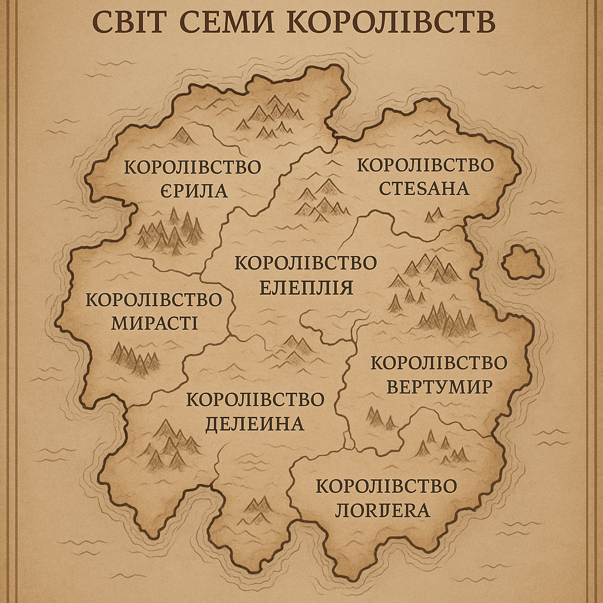

Ввійти
Загубилися в світі Семи королівств?
Нічого, наш посібник вам допоможе🐱🏍
Королівство Єрила
Північне королівство, покрите вітряними рівнинами та холодними лісами. Його мешканці — стійкі воїни, які славляться своїм залізом та морозною витримкою.
Королівство Стесана
Розташоване на сході, це місце відоме гірськими монастирями, хмарами туману та мудрецями, що живуть у відлюдненні. Звідси походять найглибші легенди про давнє знання.
Королівство Мирасті
На заході розкинулися золоті поля Мирасті. Народ тут миролюбний, живе в злагоді з природою. Їхні вина та спеції — найцінніші на континенті.
Королівство Елеплія
Центральне королівство, серце торгівлі, знань і дипломатії. Тут перетинаються всі дороги та інтереси інших шести держав. Столиця — Елмарис — відома величними шпилями й бібліотеками.
Королівство Вертумир
Південно-східне королівство, загорнуте в легенди про магів, зниклі цивілізації та джунглі, що дихають стародавніми таємницями. Тутешні жителі шанують драконів як священних істот.
Королівство Делеїна
Південний захід укритий кам'янистими рівнинами та печерами, що ведуть у глибини землі. Саме тут кують зброю для інших королівств. Народ Делеїни — майстри та гірники.
Королівство Лордера
Найпівденніше королівство з берегами, омиваними штормовими водами. Лордерці — мореплавці, контрабандисти та шукачі пригод. Їхня гавань ніколи не спить.
Які раси можна зустріти?👤
Люди
Найбільш численна раса, відома своєю винахідливістю, прагненням до влади та різноманітністю культур. Люди здатні пристосуватися до будь-яких умов, від холодних півночей до пустельних степів.
Ельфи
Довговічна раса з тонкими рисами обличчя та глибоким зв’язком з природою. Ельфи живуть у лісах, співають деревам і володіють магією, яку вивчають ще з дитинства.
Гноми
Низькорослі, але кремезні істоти, які живуть у гірських тунелях. Гноми — вправні ковалі та рудокопи, їхні клинки славляться по всьому світу. Їхній кодекс честі — незламний.
Орки
Могутні воїни із зеленуватою шкірою, що походять з суворих пустель і гір. Вони славляться люттю в бою, але серед них є й мудрі вожді, що ведуть свої племена до гармонії з природою.
Драконорожденні
Гібридна раса, що має луску, роги або крила, успадковані від давніх драконів. Вони володіють вогняною магією і мають гучну репутацію непереможних воїнів.
Фейрі
Маленькі чарівні істоти з прозорими крилами, що живуть серед квітів і магії. Вони грайливі, та інколи можуть бути підступними, особливо коли хтось порушує їхній спокій.
Морські народи
Істоти з лускатою шкірою, що мешкають у підводних містах. Вони спілкуються з китами, створюють коралові палаци та зневажають поверхневий світ.
Темні ельфи
Раса ельфів, що обрала шлях тіней і забороненої магії. Їхні підземні міста сповнені пасток і таємниць, а їхні очі світяться у темряві.
Шкіроходи
Люди, які здатні перевтілюватися в тварин. Вони живуть із вовками, ведмедями чи яструбами та мають особливий духовний зв’язок із природою.
Огри
Великі, сильні й трохи незграбні істоти, які воліють жити у самотності. Огри не надто розумні, але можуть зберігати століттями цілі легенди у своїй пам’яті.
Маги
Люди або напівбоги, що повністю присвятили себе вивченню магії. Їхнє тіло й розум змінені чарами, і дехто з них втрачає людяність, здобувши неймовірну силу.
Кентаври
Напівлюди, напівконі, що живуть у широких степах. Їхні списи точні, а зір — гострий як у яструба. Вони ведуть кочовий спосіб життя і глибоко шанують зірки.
Тіні
Безтілесні створіння, які мешкають у межі між сном і дійсністю. Тіні не розмовляють, але їхній дотик приносить страх і забуття. Їх бояться навіть маги.
Астралійці
Істоти з іншого виміру, їхня шкіра сяє зорями. Вони бачать час і простір по-іншому та часто говорять у загадках. Астралійці не мають постійного тіла.
Напівдракони
Потомки людей і драконів. У них немає крил, але є полум’яний подих і непробивна шкіра. Напівдракони — рідкісні, і за ними часто полюють алхіміки.
Древні
Безсмертні істоти, що живуть тисячі років. Вони не втручаються в справи смертних, але іноді посилають провидців, щоб запобігти катастрофам. Їхні очі бачать істину.
Гобліни
Малі, хитрі істоти, які живуть у руїнах, каналізаціях або закинутих шахтах. Гобліни вправні в техніці, винахідливі, але підступні й жадібні.
Дріади
Поклонтелі дерев, жіночі істоти, які не можуть покинути своє дерево. Вони чарівні, лагідні, але в разі небезпеки можуть викликати коріння й ліси на захист.
Кого б ви хотіли як домашнього улюбленця?🐱🐉
Сіропащери
Хижі ссавці з довгими лапами та сірою шкірою без шерсті. Мешкають у туманних лісах, полюють зграями. Їхній зір слабкий, але нюх надзвичайно гострий.
Копитні хмародрили
Великі травоїдні, схожі на суміш бізона й страуса, з копитами та довгою шиєю. Живуть у гірських плато, швидко бігають і видають гучні крики перед бурею.
Міткові лиси
Маленькі, надзвичайно хитрі тварини, що змінюють колір хутра залежно від пори року. Використовуються мисливцями як компаньйони.
Гребені кізарі
Козоподібні істоти з кістяним гребенем на голові. Дуже витривалі, здатні виживати в найсуворіших умовах скель і ущелин. Здатні ставати на задні лапи, захищаючись.
Піщані корелони
Схожі на величезних броньованих мишей, ці тварини викопують довгі тунелі в пустелях. Їхнє м’ясо цінується серед кочівників.
Крижані трогги
Білі ведмедеподібні хижаки з довгими іклами. Їхнє хутро відбиває світло, роблячи їх майже невидимими серед снігів. Дуже територіальні.
Морські дзьобороги
Сильні плавці, схожі на суміш морського лева й пелікана. Мають дзьоб, здатний пробивати корабельні борти. Зазвичай миролюбні.
Стіжкові пацюки
Пацюки, що носять з собою шматки ганчір'я або шерсті, створюючи своєрідний “стіг”. Часто використовуються в алхімії через токсини в їхніх зубах.
Болотяні шипозаври
Повільні, але майже невразливі, ці істоти вкриті грубою шкірою з шипами. Зустрічаються лише в гниючих болотах. Місцеві легенди вважають їх охоронцями трясовин.
Летючі снитики
Маленькі нічні птахи, які видають гіпнотичні звуки. Часто слідують за мандрівниками, але ніколи не підлітають близько. Їх вважають провісниками сну.
Горські вілдери
Рогаті істоти, схожі на диких биків, із шерстю, що іскриться від тертя об каміння. Відомі своєю люттю, коли їх потривожити під час міграції.
Підлистники
Малі істоти, які живуть під опалим листям і хрумтять при ході. Невинні, але дехто боїться їх через звук, який вони видають уночі — схожий на шепіт.
Рівнинні скребуни
Схожі на гігантських мурах, ці тварини прочісують трави рівнин у пошуках личинок. Видають пронизливий звук при небезпеці, що викликає тимчасову дезорієнтацію.
Кам’яні видри
Великі водні тварини з товстими черепами, якими вони розбивають мушлі. Дуже грайливі й соціальні, часто живуть поблизу людських поселень.
Шептуни
Пташки з незвичним дзьобом, що видає звуки, схожі на людські голоси. Їх часто звинувачують у тому, що зводять мандрівників з дороги.
Каменеголові вужі
Змії з твердими, мов камінь, лусками на голові. Вони закопуються в землю, лишаючи лише очі на поверхні. Їх важко помітити, поки не пізно.
Древолази
Тварини, схожі на котів із присосками замість кігтів. Вони здатні спати висячи вниз головою та вловлюють здобич язиком, як жаби.
Хрущі рогаті
Жуки розміром із долоню, з великим рогом, яким вони копають нори. Дуже мирні, їх іноді тримають як домашніх у степових поселеннях.
Зеленоспини
Малі броньовані ящірки з зеленою спиною. Їхні залози виробляють пахучу рідину, яку використовують для позначення території. Їхні яйця — делікатес.
Сховники
Мишоподібні істоти, що будують складні гнізда з ходами, пастками і схованками. Часто збирають блискучі речі, які можуть викрасти навіть у людей.
А ви добре вчили історію в школі?🧐
Можливо, вас зацікавить історія Семи королівств)
Світ почався не з вибуху і не з творення — а з тиші. У перші тисячоліття існували лише контури материків, не до кінця сформовані рельєфи, нестабільна атмосфера і час, що рухався стрибками. Умови були непридатні для життя, але з часом океани заспокоїлись, грунти стали стабільними, і світ обрав напрямок уперед.
Першими з живого були не раси, не магія, не культури — а дика, жива природа. Ліси зростали хаотично, пустелі ширилися, гори рухались. Континенти ще дихали, тектоніка була агресивною, і тільки через десятки тисяч років світ почав стабілізуватись. Саме тоді з'явилися перші форми інтелектуального життя — не обов'язково ті, що вижили до сьогодні. Багато з перших цивілізацій зникли ще до того, як сучасні раси отримали свою форму.
Епоха Формування — перший період, де життя мало сенс. Різні розумні види — незалежно, одночасно — почали формувати поселення. Вони ще не мали письма, не вірили в богів, але будували перші храми: для неба, землі, часу. Багато з них виродились, зникли або були поглинуті наступними. З того хаосу виринули перші великі культури.
Далі настала Епоха Каменю і Глини. Раси навчилися будувати з матеріалів, а не просто копати печери. Перша писемність виникла не з поезії, а з рахунку: зерно, робочі руки, вода. З’явились системи влади, примітивні міста-держави. Але співіснування було недовгим — надто різні погляди, потреби й простір. Перші війни були ще без імен, але мали наслідки. Цілі народи переселялись, кордони — змінювались щороку.
З часом світ увійшов у Епоху Ковальства. Розвиток металів змінив усе: і війни, і торгівлю, і побут. Розвинулись перші маршрути між цивілізаціями, створились торгові гільдії, а з ними й перші імперії. Утворилась складна політична карта. Раси, що колись не перетинались, тепер воювали або обмінювались знаннями. Технології рухались нерівномірно — деякі народи освоїли парову силу, інші досі полювали з кістяними списами.
Епоха Розривів — період, де світ уперше зіткнувся з масштабною нестабільністю. Причин було багато: зміна клімату, падіння кількох великих імперій, загадкове зникнення цілих міст. Торгові шляхи розпались, народи стали ізольованими. З’явилось багато нових мов, культур, відмінностей. Вважається, що саме тоді зникли деякі давні раси, поступившись місцем новим, більш адаптивним.
Та найсильнішим поштовхом стала Технологічна Революція, яка прийшла з південного сходу. Один народ — якого сьогодні не існує — відкрив спосіб обробки енергії, що перевершувала пар і метал. Розпочалась нова епоха — Епоха Енергії. Її не всі витримали. Деякі держави розпались під тиском модернізації, інші стали наддержавами. Кількість міст зросла вдвічі. Люди навчилися перемагати хвороби, але втратили багато давніх знань. Світ змінився кардинально. Поступово зникло уявлення про “край світу” — майже всі землі були вивчені.
Нова доба — Епоха Мозаїк — в якій світ живе зараз. Тут — фрагменти старого і нового. Древні руїни стоять поряд із мегаполісами. На території однієї держави може бути село, де вірять у духів каменю, і місто, де вирощують штучних істот для роботи. Технології існують поряд із культурною спадщиною, а політична карта змінилася настільки, що кордони більше не значать того, що колись.
Але між цими мозаїчними клаптиками — конфлікти. Баланс сил тримається на вміннях торгувати, погрожувати, іноді — виживати. Світ повен дрібних війн, ідеологічних розломів, але також — відкриттів, що можуть усе змінити. Час іде вперед, але старі тіні лишаються. Революції готуються, корпорації ростуть, люди — ще вчаться.
І хоч історія більше не має єдиного вектора, вона не зупинилась. Цивілізація рухається. Світ — у точці, де все можливе. І де все може впасти, чи полетіти🐲.
Тут теж полюбляють легенди🙃
Легенди
У кожному регіоні, серед кожної раси чи навіть у межах одного міста існують свої легенди — страшні, величні, безглузді або надто правдоподібні. Те, що для одних — вигадка, для інших — історичний факт. Нижче — п'ятнадцять найвідоміших легенд світу, які вплинули на культуру, політику, міфи та уявлення про добро і зло. Насправді їх — тисячі, зокрема й зовсім не відомих за межами кількох селищ.
1. Примарний міст Трео
Від народу фалмарів з півночі. Кажуть, що міст Трео з’являється тільки в ніч зимового рівнодення — і веде до світу, де ніхто не старіє, але не може повернутись. Тих, хто ступив на нього, ніколи більше не бачили. Але щороку хтось пробує.
2. Кам’яний Плач Селікірі
У горах держави Кааріс існує валун, з якого іноді тече вода. Місцеві кажуть — це душа вбитої правительки, яку зрадили свої ж діти. Її дух досі чекає правди. Кажуть, вода лікує тільки щирих.
3. Безлика Королева Усті-Баар
Легенда оріонців. Колись жінка правлячої династії втратила обличчя — буквально — після забороненого ритуалу. Вона стала тінню, яка краде чужі обличчя, щоб лишитись серед живих. Вважається, що кілька правителів Усті-Баар були не людьми.
4. Чорні дзеркала Тенґару
У лісах Ґару живуть напівміфічні дзеркала — гладенькі шматки обсидіану, які показують "якби все пішло інакше". Багато мандрівників втратили розум, дивлячись на них. Але найстрашніше — це коли дзеркало показує майбутнє. Яке не уникнути.
5. Син Пітьми з Тхала
Один із найстаріших міфів материка: у місті Тхал народився хлопчик без серця. Він не помирав, не відчував, не спав. Одного дня він просто зник — і з того часу в тіні кожної столиці шукають його очі.
6. Місто-Привид Ашерен
Західні гірські племена вірять, що під землею є ціле місто — з будинками, кованими вночі, і жителями без тіней. Раз на століття двері міста відкриваються, і його мешканці підмінюють кількох людей згори. Ніхто не знає, як відрізнити справжніх.
7. Три зірки над Зелеїдом
Небесна легенда астрономів держави Вейн. Кожні 117 років три зірки шикуються в одну лінію — і дають “доступ до найвищої мудрості”. Багато вчених, що бачили цю подію, потім зникали або говорили з “когось зверху”. Один із них залишив фразу: "Тепер я знаю, чому ми самі".
8. Пісня Молоха
В морських гільдіях поширена легенда про пісню, що викликає бурю. Її співають на трьох мовах одночасно — і море “відповідає”. Одного разу цілий флот затонув після того, як її виконали заради жарту.
9. Гігант Шелястий
Діти ґрахів люблять казки про Шелястого — величезного велетня з панциром, що спить під болотом. Кажуть, кожна повінь — його поворот у сні. Дорослі ж твердять: це алегорія. Але щось під болотом рухається.
10. Годинник без стрілок
У столиці Еллон є старий баштовий годинник, у якого зникли стрілки понад 300 років тому. Проте щороку в один і той самий день башта лунає дивним дзвоном. Люди вважають, що то відлуння великої події — яка ще попереду.
11. Сіра кобила Сесай
Народ Кеєра вірить у сіру кобилу, яка приходить вночі до тих, хто має померти наступного дня. Вона несе їх у сон, а вранці — ті не прокидаються. Одного разу її побачили вдень.
12. Скляний пагорб
У північному краю розповідають про пагорб, на якому все, що лишають — зникає. І через кілька днів повертається — але іншим. Один торговець залишив там власну руку. Тепер вона ходить сама.
13. Кров Чистого Меча
У давніх кланах Карайлії живе легенда про меч, який вбиває не ворогів, а носія. Меч не можна кинути, продати чи сховати. Кожен, хто його бере, знає — що його шлях закінчиться болісно, але славно.
14. Ріка, що тече вгору
Серед пустельників Ісраму побутує розповідь про ріку, яка тече проти тяжіння. Вона з’являється тільки під час повного затемнення. Той, хто вмиється в ній, “бачить себе справжнього”. Але не завжди виживає.
15. Бібліотека під шкірою
Легенда сучасного мегаполісу Атарон. Ходять чутки, що деякі люди носять цілі бібліотеки всередині себе — закодовані на клітинному рівні. Вони не читають, вони згадують. І бояться, щоб їх не розшифрували.
7 королівств і 8 богів
Хтось заснув?👁🗨
Боги
У світі, роздертому часом, магією й війнами, віра в богів — не лише духовна практика, а спосіб вижити. Їх шанують, бо бояться. Їх клянуть, бо розуміють, що вони реальні. Нижче — п’ятнадцять найвпливовіших богів пантеону: жорстоких, дивних, величних і байдужих. Деяких бачили. Деякі — самі створили те, що бачимо.
1. Ареміс, Сплячий Над Світом
Бог, що ніколи не прокидається. Вважається творцем материків і небес, які сновидів. Коли його сни неспокійні — трапляються катастрофи. Присвячені йому моляться, щоб він *не прокинувся ніколи*.
2. Ішта, Мати Кісток
Покровителька смерті й забутих. Ішта — не зла, але невблаганна. Вона дає спокій тим, хто загинув несправедливо. А тих, хто знущається над мертвими, повертає в життя — але не повністю.
3. Кел’Харет, Той, Що Живе У Мовчанні
Бог мовчання, втрат і пустоти. Його храми — без вікон, без звуків. Він відповідає тільки тим, хто пройшов крізь повне мовчання сім діб. І навіть тоді — лише поглядом у дзеркало.
4. Сіринель, Вогонь Вітру
Богиня змін, поезії й хаосу. Її голос — буря, її погляд — блискавка. Мандрівники кличуть її перед небезпекою, але вона може відповісти несподівано — зробити ворога другом, або спалити обидвох.
5. Моршах, Дитя Тріщин
Наймолодший із богів. Виник після великого землетрусу. Моршах не має постійної форми — його бачать то як змія, то як дитину з трьома очима. Він — бог нових доріг і катастрофічних ідей.
6. Уль-Ра, Ткач Світла
Бог зоряного сяйва і справедливості. Зображується як сліпий старець з нитками світла у руках. Уль-Ра судить душі після смерті, але ніколи не карає. Він лише вказує шлях — кара завжди приходить сама.
7. Тіана, Ламаюча Обітниці
Забута богиня зради й кохання. Колись була богинею вірності, але її зрадив інший бог — і вона стала тією, хто нищить клятви. У її честь розривають угоди й клянуться помститися.
8. Ґракс, Червоточина
Невідомо, чи Ґракс — бог, чи хвороба, що стала живою. Його шанують маги й алхіміки, які прагнуть безсмертя. У кожному зараженому — частинка його волі. Кажуть, Ґракс говорить через сни.
Куди ж без культур?💫
Культури
Кожне королівство чи регіон має свою неповторну культуру, звичаї та традиції, що передаються з покоління в покоління. Ось деякі з найвідоміших культур світу:
-
1. Культура Єрила
Люди Єрила славляться своєю витривалістю та відвагою. Вони живуть в суворих умовах, де вітри та морози стали частиною їхнього життя. У мистецтві та побуті виражається простота й сила. Більшість традицій пов'язані з природою та війною, а також зі сталевим виробництвом. -
2. Культура Стесана
Стесанці — це народ мудреців та відлюдників, які віддають перевагу спогляданню світу, а не активній боротьбі. Вони слідкують за туманними горами і глибокими традиціями, що передаються через мови та духовні практики. Їхня культура тісно пов'язана з внутрішнім самопізнанням і стародавніми знаннями. -
3. Культура Мірасти
Мірастійці живуть в гармонії з природою та земною красою. Вони славляться своїми сільськогосподарськими традиціями, виготовленням вина та спецій, що є важливим елементом їхньої культури. Спільноти Мірасти підтримують міцні родинні зв'язки і практикують спокійне і миролюбне життя. -
4. Культура Елеплії
Елеплія — це культурний та торговий центр континенту. Тут зібрані всі народи та культура різних народів переплітається. Міста, що є осередками освіти та торгівлі, славляться своєю архітектурою, мудрістю та відкритістю до нових ідей. Вони завжди були місцем зустрічі і співпраці між культурами. -
5. Культура Вертумиру
Люди Вертумиру мають тісний зв'язок із магією та древніми таємницями. Їх культура глибоко переплетена з ритуалами і звичаями, що часто передаються від покоління до покоління через магічні практики. Вони шанують драконів як священних істот і шукають знайти баланс між природою та магією. -
6. Культура Делеїни
Делеїні — майстри кузні та гірників, їх культура зосереджена навколо обробки металу та каменю. Вони славляться своєю відданістю роботі, виготовленням зброї, а також різноманітними ремеслами. Гірські регіони Делеїни населені людьми, які вірять у силу каменю та сталі. -
7. Культура Лордера
Лордерці — народ, що живе на водах, мореплавці та шукачі пригод. Їх культура насичена морськими традиціями, контрабандою, а також незліченними легендами про подорожі та відкриття. Лордера — це країна, де час і простір змішуються, і де сміливість йдеться поруч із жагою до невідомого.
Це лише основні культури, але їх значно більше. Кожне королівство має свою унікальну спадщину та культурні особливості, що визначають його народи та традиції.
Думали - вас тут зустрінуть без мігії?🎆
Магіки (Магічні Тварини)
У світі існують численні магічні істоти, що володіють неймовірними здібностями та мають важливе значення для природних, магічних і навіть політичних процесів. Ось деякі з найбільш відомих магічних тварин, що мають властивості, пов'язані з магією:
-
1. Дракони
Дракони є одними з наймогутніших і найстрашніших істот у світі. Вони можуть маніпулювати елементами природи: вогнем, льодом, повітрям чи навіть землею. У деяких культурах дракони вважаються священними істотами, наділеними стародавніми знаннями. Їхня магія часто пов'язана з пророчествами, захистом від загроз або просто з владою над стихіями. -
2. Демонічні шакали
Ці чорні шакали володіють здатністю викликати магічні омани, що плутають свідомість людей та створюють ілюзії. Вони часто асоціюються з темними чарами та чаклунськими практиками. Легенди говорять, що демонічні шакали можуть проникати в душі своїх жертв, змушуючи їх виконувати безглузді чи згубні вчинки. -
3. Фенікс
Ці магічні птахи є символом безсмертя та відродження. Коли фенікс вмирає, він згорає у вогні, а з його попелу відроджується новий птах. Вони мають здатність лікувати та відновлювати живі істоти, їхні сльози можуть зцілювати смертельні рани. Фенікс є символом надії та циклічності життя, і їх часто асоціюють з магією відродження та трансформації. -
4. Левітуючі Вовки
Ці міфічні вовки можуть літати через небо за допомогою магії, яка дозволяє їм управляти силою тяжіння. Вони часто є охоронцями або супутниками магів та могутніх чаклунів. Їхня магія дозволяє їм створювати магічні бурі, які можуть викликати хаос або захистити від небезпек. -
5. Грифони
Грифони — це створіння з тілом лева і головою орла. Вони славляться своєю силою та розумом, здатні маніпулювати аурою та відчувати емоції оточуючих. У багатьох культурах грифони є охоронцями та символами влади. Їхня магія часто зосереджена на захисті та контролі над природними елементами, зокрема повітрям. -
6. Сірі Слони
Ці великі магічні слони мають здатність маніпулювати землею. Вони можуть викликати землетруси, відкрити проходи через гори або навіть змінювати ландшафт навколо себе. Їхня магія пов'язана з циклічним процесом створення і руйнування, вони є дуже рідкісними і шанованими істотами. -
7. Міфічні Манткони
Манткони — це створіння, схожі на величезних зміїв з чотирма крилами. Вони мають здатність вити магічні тумани та володіють силою контролювати розум істот, які потрапляють у їхній вплив. Манткони часто використовуються в ритуалах і як живі компоненти магічних церемоній. -
8. Чорні Сфінкси
Ці загадкові створіння поєднують у собі магію і фізичну силу. Вони можуть зчитувати думки та передбачати майбутнє, за допомогою своєї магії вони здатні створювати складні пастки або оберігати найбільш важливі місця від небажаних вторгнень. Чорні Сфінкси частіше зустрічаються у високих горах та важкодоступних місцях. -
9. Магічні Крабики
Ці дивні істоти з морських глибин володіють здатністю маніпулювати водою. Вони можуть створювати потоки води, використовуючи магію, що дозволяє їм переміщуватися або створювати штормові хвилі. Магічні Крабики часто використовуються в магічних експериментах, пов'язаних з водними елементами. -
10. Тіньові Ворони
Тіньові Ворони — це містичні істоти, що існують на межі реальності та ілюзії. Вони можуть зникати і з'являтися у тінях, а також відчувати та маніпулювати темрявою. Тіньові Ворони часто є спільниками темних магів і відомі своїми здібностями до змін форм та маніпулювання світлом.
Це лише кілька найбільш відомих магічних істот. У світі існують сотні різноманітних тварин з магічними властивостями, що вносять нові можливості в магію та природні явища, а також взаємодіють з людьми та іншими істотами в незвичайні та цікаві способи.
Тут не вийде 17 iPhone😭
Але теж є щось цікаве🤔
Технології та Винаходи
У цьому світі технології та магія переплітаються, створюючи унікальні досягнення, які об'єднують стародавні технології середньовіччя з чудесами магії. Багато з цих технологій — це не лише механічні пристрої, а й магічні артефакти, які застосовуються для полегшення повсякденного життя, ведення війни або пізнання світу.
-
1. Магічні Рудачі
Винахід у світі гірників та металургів, який дозволяє використовувати магію для прискорення видобутку руд. Магічні рудачі використовують спеціальні камені або артефакти, що притягують руду до себе, значно спрощуючи її добування. Це дозволяє отримувати метал з набагато меншими зусиллями і створювати високоякісне зброю або магічні амулети. -
2. Кристальні Ліхтарі
Відсутність електричної енергії компенсується магією в поєднанні з кристалами. Кристальні ліхтарі працюють за допомогою магічних кристалів, які накопичують енергію від сонця або навіть магічних обрядів. Ці ліхтарі не лише дають світло, але й часто випромінюють магічні хвилі, здатні впливати на навколишнє середовище або людей (наприклад, заспокоювати духи або відлякувати темні сили). -
3. Аеронавігація
Магія повітря дозволила створити перші літаючі кораблі та повітряні баліони. Ці аеронавігаційні пристрої використовують комбіновану силу магії вітру та механічних конструкцій, щоб піднятися в повітря та мандрувати через небеса. Здебільшого їх використовують для війни та дипломатичних місій, хоча є й цивільні модифікації для перевезень або навіть розваг. -
4. Перо Гримарії
Одним з основних винаходів для магів є перо Гримарії — магічний артефакт, що дозволяє записувати магічні заклинання без необхідності постійно утримувати концентрацію. Це спеціальне перо, яке при контакті з будь-яким матеріалом автоматично записує думки та заклинання, що підказуються магу. Воно зберігає свої записи навіть після того, як маг відходить від нього, що дає змогу створювати магічні манускрипти без зайвих зусиль. -
5. Магічні Гармати
Силові гармати, що використовують не тільки порох, але й магічну енергію для підсилення пострілів. Вони поєднують механічну силу з потужними магічними вибухами, які здатні завдавати нищівного удару по ворогах. Такі гармати зазвичай використовуються на передових лініях битви, їх застосовують елітні війська в боях з потужними магічними істотами чи ворожими арміями. -
6. Механічні Руки
Магія і механіка також злилися в одне для створення "механічних рук" — пристроїв, що замінюють частини тіла, поєднуючи магічні елементи з механічними конструкціями. Це особливо важливо для воїнів і ремісників, які втратили кінцівки в боях. Механічні руки не тільки забезпечують фізичну силу, але й мають магічні властивості, здатні посилювати атаки або навіть відновлювати здоров'я власника. -
7. Транспортні Карети
В цьому світі існують карети, що рухаються не тільки за рахунок коней, а й за допомогою магічних сил. Вони оснащені спеціальними кристалами, що вивільняють енергію, і дозволяють кареті переміщатися на великі відстані без необхідності постійної тяги від тварин. Це робить подорожі значно швидшими та комфортнішими, але тільки заможні особи можуть дозволити собі таку розкіш. -
8. Заклинання Латексів
Ці магічні тканини, створені за допомогою алхімії та магії, мають властивості, що дозволяють їм самовідновлюватися або ставати абсолютно водонепроникними. Латекси можуть бути використані як броня для воїнів, одяг для мандрівників або навіть палатки, що самі себе встановлюються в умовах жорстоких погодних умов. Це диво дозволяє зберігати тепло або холод в залежності від потреби. -
9. Летючі Платформи
Магічні конструкції, що поєднують механічні елементи та повітряні магії. Ці пристрої здатні підніматися в небо і пересуватися на великі відстані, як повітряні кораблі або навіть літаки. Вони використовуються для розвідки, а також для переміщення великих вантажів або військових підрозділів через небезпечні території. -
10. Магічні Міни
Артилерійські міни, що не просто вибухають від удару, але й викликають магічні ефекти. Наприклад, мінові поля можуть створювати енергетичні бар'єри або чаклунські пастки, що затримують ворогів чи блокують магію. Ці міни дуже цінуються під час великих бойових дій або при захисті територій.
Тут є Гаррі Поттер?👀
Магія
Магія у цьому світі є потужною та складною силою, яка пронизує всі аспекти життя — від повсякденних практик до великих та небезпечних ритуалів. Вона є невід'ємною частиною кожного королівства, від загадкових чарівників у Стесані до заклинательних гармат у Вертумирі. Магія не завжди є безпечною, і ті, хто намагається маніпулювати нею без належного знання, часто потрапляють у великі неприємності.
-
1. Елементи Магії
Магія поділяється на кілька основних елементів, кожен з яких має свою силу та сферу впливу:- Вогонь: Стихія руйнівної сили. Вогняні маги можуть викликати вибухи, вогняні стіни або навіть маніпулювати температурою навколишнього середовища.
- Вода: Стихія життя та очищення. Маги води контролюють потоки річок, викликають дощі або використовують воду для лікування.
- Повітря: Стихія швидкості та руху. Маги повітря здатні створювати бурі, вітри, маніпулювати атмосферними умовами або навіть літати.
- Земля: Стихія стабільності та сили. Маги землі можуть змінювати ландшафт, викликати землетруси або маніпулювати скелями та камінням.
- Світло: Стихія святого очищення, добра та світла. Маги цього напрямку лікують хвороби, відганяють темні сили та створюють святі бар'єри.
- Тінь: Стихія темряви, страху та прихованості. Тіньові маги маніпулюють туманами, зникають в тіні або викликають кошмари.
-
2. Магічні Поглиблення
Магія не є одноразовим вивченням. Вона поглиблюється через практику, навчання та осягнення магічних секретів. Маги можуть:- Магічні Школи: Навчання магії часто проходить в спеціальних школах або монастирях, де маги вивчають різні стилі магії, філософію та історію магічних практик.
- Ритуали та Обряди: Магія часто вимагає проведення складних ритуалів, що включають жертвопринесення, заклинання або обряди очищення, які дозволяють зв'язатися з потужними магічними силами.
- Магічні Артефакти: В світі існують предмети, що зберігають в собі магію, такі як амулети, книги з магічними заклинаннями, магічні жезли, що допомагають в управлінні силою.
-
3. Чаклунські Лінії
Магія також розділяється на лінії або напрямки, які визначають стиль і філософію магів:- Чарівники: Ці маги використовують інтелект та обчислення для формулювання заклинань, часто працюючи з елементами та алхімією.
- Заклинатели: Маги, які викликають елементарних духів, демонів або магічних істот, часто мають силу керувати тваринами та магічними істотами.
- Чорні Маги: Ці маги здебільшого практикують темну магію, використовують закляття для прокляття, виклику демонів, спотворення або маніпуляції смертю.
- Маги Лікування: Вони вивчають магію для лікування хвороб, загоєння ран, відновлення сил і захисту від недуг.
- Маги Часу: Небагато магів володіють цією потужною силою, здатною маніпулювати часом: уповільнювати або пришвидшувати його, передбачати майбутнє або змінювати минуле.
-
4. Магічні Бар'єри та Захист
У світі магії існують потужні бар'єри та захисти, що оберігають від небезпечних магічних впливів:- Щити та Бар'єри: Маги створюють бар'єри, що захищають від атак ворогів, магії або навіть від небезпечних природних явищ. Це можуть бути як фізичні, так і енергетичні бар'єри.
- Магічні Блокування: Деякі маги вміють блокувати магію інших, створюючи спеціальні простори, де магія не може працювати.
- Амулети Захисту: Вони створюються для запобігання темним впливам, захисту від злих духів, проклять та інших магічних атак.
-
5. Магічні Тварини та Істоти
У світі існують не тільки маги, але й магічні тварини та істоти, що мають власну силу. Це дракони, фенікси, демонічні шакали та інші міфічні створіння, здатні маніпулювати магією чи навіть бути її джерелами. Маги часто використовують їх для захисту або як послідовників.
Хто там вірить в гороскопи?♊
Космос
Космос цього світу багатий на таємниці та нескінченну красу. Величезні галактики, зірки та сузір'я впливають на життя мешканців планет, та їхній рух може мати глибоке значення у магічних та астрономічних аспектах. Ось основні елементи, що складають космічну картину цього світу:
-
1. Галактика
Галактика, в якій розташований цей світ, називається "Туманні Ворота". Це спіральна галактика з численними зорями, планетами та космічними об'єктами, яка знаходиться на межі відомого Всесвіту. Її центральна частина містить величезне чорне ядро, яке є джерелом магічної енергії. Вона є домом для численних цивілізацій, багато з яких здатні керувати магією на основі космічних сил. -
2. Сузір'я
Небо цього світу розділяється на кілька великих сузір'їв, кожне з яких має своє значення для астрології та магії:- • Орлине Сустріє: асоціюється з владою і містить в собі найбільшу кількість магічних сил, які можуть впливати на духи та земні стихії.
- • Сустріє Блискавки: це сузір'я відповідає за стихію вогню і електричні магічні потоки, які можуть прокачувати енергію через магічні артефакти.
- • Сустріє Вітрів: пов'язане з повітряними магіями і мандрівками між світом і небом.
- • Крижане Сустріє: символізує зиму, холод і вплив магії льоду. Воно вважається найбільш загадковим з усіх сузір'їв.
-
3. Знаки Зодіаку
У цьому світі існує 12 магічних знаків зодіаку, які тісно пов'язані з космічними силами, що впливають на життя та магію. Кожен знак має свою унікальну силу:- • Вогняний Лев: цей знак символізує палаючу відвагу і безстрашність. Маги цього знака можуть маніпулювати вогнем і здатні до неймовірної фізичної та магічної сили.
- • Тіньовий Ведмідь: знак, що відповідає за темні магії і здатність маніпулювати тінями та страхом. Ведмеді володіють глибинними знаннями, що дозволяють їм проникати в інші виміри.
- • Зоряний Кіт: знак, що символізує інтуїцію та здатність бачити майбутнє. Коти здатні маніпулювати світлом і тінями, а також мандрувати між реальністю та сном.
- • Морозний Дракон: цей знак пов'язаний з магією льоду та холоду. Дракони здатні створювати заморожені шторми та маніпулювати часом у суворих умовах холоду.
- • Рубінова Птиця: знак, що уособлює вогонь і відродження. Маги цього знаку здатні відновлювати себе і своїх союзників, запалюючи їх внутрішнім вогнем.
- • Туманний Лис: знак, пов'язаний з магією ілюзій і невидимості. Лисиці часто використовують свою спритність і хитрість, щоб вводити ворогів в оману та уникати небезпеки.
- • Магічний Олень: знак, що символізує природу і зв'язок з лісами. Олень здатний призвати природні стихії та взаємодіяти з магією землі, росту та життя.
- • Крилатий Віл: цей знак пов'язаний з повітряними магіями і здатністю переміщуватися зі швидкістю вітру. Віли можуть маніпулювати атмосферними явищами та контролювати силу повітря.
- • Чорний Вовк: знак, що уособлює дика природа та боротьбу. Вовки можуть маніпулювати своїм тілом і перетворюватися на істот, що мають здатність до магії крові.
- • Світляний Олень: знак, пов'язаний із світлом та гармонією. Олень має здатність випромінювати світло, що заспокоює і лікує, і може використовувати світлову магію для очищення темних сил.
- • Залізний Лев: цей знак асоціюється з силою, стабільністю і магією металу. Леви здатні керувати металами, витягувати з них силу і використовувати її для створення зброї та артефактів.
- • Сонячний Краб: знак, пов'язаний з космічними силами сонця та світла. Краби можуть маніпулювати сонячною енергією, викликаючи світлові бурі або посилюючи магічну силу сонця.
-
4. Місяці року
Рік у цьому світі складається з 12 місяців, і кожен місяць має своє унікальне значення:- • Зимний Вітер: перший місяць року, що символізує початок зимових циклів і збирання сил.
- • Лютневий Вогонь: місяць, коли стихія вогню починає набирати силу.
- • Весняне Відродження: початок нового циклу росту та відродження природи.
- • Зелені Дні: період найбільшої сили для рослинності та магії життя.
- • Літній Сонцестояння: пік літа, коли магія сонця досягає свого максимуму.
- • Теплі Дощі: місяць, коли магія води стає домінуючою силою.
- • Осіннє Затишшя: перехід до осіннього циклу та підготовка до зимових магічних сил.
- • Місяць Містичних Туманів: час, коли магія туманів і ілюзій досягає свого розквіту.
- • Снігові Шторми: місяць, коли темні сили морозу виявляються найсильнішими.
- • Місяць Тіні: найбільш темний місяць року, коли магія ночі стає невидимою та потужною.
- • Полярні Зорі: період, коли зірки блимають з особ
Любите пікніки на свіжому повітрі?🌳
Природа
Природа цього світу різноманітна та велична, від холодних і нескінченних рівнин Єрила до густих джунглів Вертумиру. Природні ландшафти відіграють важливу роль у житті кожного королівства, впливаючи на їх економіку, культуру та спосіб життя. Усі стихії мають свій вплив на природу: від магічних лісів, що здатні змінювати час, до величезних гір, що приховують стародавні таємниці.
-
1. Ліси та Джунглі
Природа цього світу розмаїта й поділяється на кілька типів лісів і джунглів, кожен з яких має свої унікальні особливості:- Ліси Єрила: Холодні, вітряні ліси, де дерева мають величезні стовбури та покриті снігом в зимовий період. Тварини цієї місцевості пристосовані до суворих умов, а деякі з них володіють магією, що дозволяє їм виживати в таких умовах.
- Джунглі Вертумиру: Це місце, де не тільки флора, але й фауна здаються магічними. Тут ростуть незвичайні рослини, які можуть рухатися або виділяти отруйні випаровування. Легенди свідчать, що глибоко в джунглях можна знайти залишки давно зниклих цивілізацій.
- Світлі Ліси Мирасті: В цих лісах світло пробивається через густе листя, створюючи неймовірну атмосферу. Це місце спокою і гармонії, де живуть миролюбні істоти, які вчать людей жити в злагоді з природою.
-
2. Гори та Печери
Високі гори і глибокі печери є домівкою для багатьох магічних істот, а також важливих природних ресурсів:- Гори Стесана: Це місце, де мудрість гори та туманні монастирі розташовані в найвіддаленіших куточках. Вершини цих гір важко досягнути, але саме тут ростуть рослини з цілющими властивостями.
- Печери Делеїна: Гірські рівнини і величезні печери приховують кришталь, що має магічну силу. Майстри гірники Делеїна використовують ці кристали для виготовлення найкращої зброї в королівствах.
- Гори Лордера: На південь від континенту підносяться буремні й величезні гори, що утримують постійні шторми. Серед них ховаються магічні істоти, які оберігають вхід до стародавніх храмів, що покриті таємницями і цінними артефактами.
-
3. Океани та Річки
Вода в цьому світі має особливу роль: вона не лише забезпечує життя, але й може бути потужним джерелом магії:- Океани Лордера: Вони омивають південний край континенту, і є домом для величезних морських істот, таких як морські дракони, які здатні управляти хвилями. Лордерці часто вирушають у подорожі через ці води в пошуках пригод.
- Річки Мирасті: Золоті річки цієї місцевості є джерелом життя для всього королівства. Вони не тільки дають воду, а й слугують для транспортування товарів і з'єднують різні частини королівства.
- Водоспади Стесана: Величезні водоспади, що падають з високих гір, є місцем паломництва для тих, хто шукає мудрості і зцілення. Легенди свідчать, що води цих річок мають магічні властивості.
-
4. Магічні Рослини
Природа цього світу багата на рослини, які не лише мають цілющі властивості, але й здатні маніпулювати магією:- Ефірні Трави Єрила: Рідкісні рослини, які ростуть тільки в холодних умовах. Їхні листя можуть бути використані для створення магічних настоянок, які дарують короткочасну неуразливість до холоду.
- Драконів Лист Вертумиру: Ці рослини здатні змінювати свій колір залежно від магії, що є поруч. Вони є потужним компонентом у заклинаннях та зіллях, що викликають зміни в елементальних силах.
- Золоті Квіти Мирасті: Квіти, що ростуть тільки в землях Мирасті, використовуються для створення дорогих настоянок, які дають людям змогу бачити на кілька хвилин в майбутнє.
-
5. Магічні Істоти
Природа цього світу населена не лише звичайними тваринами, але й магічними істотами, які мають власні сили:- Дракони: Древні істоти, які вважаються символами сили і мудрості. Вони здатні маніпулювати стихіями та навіть керувати часом.
- Фенікси: Птахи вогню, які згорають і відроджуються з попелу. Їхні сльози можуть виліковувати будь-які рани.
- Лісові Духи: Маленькі істоти, які охороняють ліси від непроханих гостей. Вони здатні маніпулювати рослинами та часом.
Потрапили сюди, як турист?🥾
Туризм
Туризм у цьому світі — важлива частина економіки та культури, адже різні королівства і країни привертають увагу не тільки місцевих жителів, але й мандрівників з інших світів. Магічні портали, транспортні мережі та схованки для подорожей дозволяють людям з інших реальностей і світів відвідувати цей світ. Кожне королівство пропонує унікальні місця для відпочинку та досліджень, що привертає все більше туристів.
-
1. Портали між світами
Однією з найбільших привабливостей для туристів є магічні портали, які дозволяють подорожувати між різними світами. Ці портали створюються за допомогою могутніх магів або древніх артефактів. Вони дозволяють потрапити до інших реальностей, де закони фізики можуть бути зовсім іншими. Портали найчастіше знаходяться в королівствах Елеплія і Вертумир, де існують особливі навчальні заклади та лабораторії для створення нових магічних порталів. -
2. Відпочинок у Мирасті
Мирасті, зі своїми золотими полями та миролюбними людьми, є популярним місцем для туристів, які шукають гармонії з природою та спокійного відпочинку. Відвідувачі можуть насолоджуватися природними красотами, досліджувати місцеві річки і ліси, або навіть відправитися на подорож до стародавніх храмів, де можна знайти рідкісні реліквії і натхнення. У Мирасті також популярні сільські готелі та ферми, де можна відчути життя без турбот. -
3. Місто Елмарис
Столиця королівства Елеплія, місто Елмарис, — це культурний та торговий центр світу. Архітектура міста вражає своїми величезними шпилями та бібліотеками, що містять знання з різних світів. Туристи з усіх куточків світу приїжджають сюди, щоб познайомитися з найновішими науковими та магічними досягненнями, а також для участі в численних святкових подіях, конференціях і виставках. -
4. Печери Делеїна
Печери Делеїна — це не лише місце для гірників і майстрів, але й чудова туристична атракція. Глибокі печери містять рідкісні кристали та мінерали, які мають магічні властивості. Туристи можуть відвідати ці печери з екскурсоводами, щоб дізнатися про стародавні гірничі техніки, а також побачити незвичайні природні явища, такі як підземні водоспади та кристалічні лабіринти. -
5. Джунглі Вертумиру
Джунглі Вертумиру є домом для багатьох магічних істот і давніх руїн, що привертають туристів, які шукають пригоди та загадки. Хоча джунглі можуть бути небезпечними через своїх численних хижаків і складний ландшафт, багато мандрівників прагнуть дослідити їх, шукаючи забуті міста та магічні артефакти. Цей маршрут є найпопулярнішим серед шукачів таємниць і археологів. -
6. Острів Середнього Моря
Острів Середнього Моря — це місто-курорт для заможних туристів, де можна знайти шикарні готелі, розкішні ресторани і спа-салони. Вода тут тепла та кришталево чиста, що робить цей острів ідеальним місцем для відпочинку. Завдяки своїм ексклюзивним умовам острів популярний серед туристів з інших світів, які бажають провести час в атмосфері розкоші та спокою. -
7. Легендарні Пляжі Лордера
Лордер відомий своїми штормовими водами та фантастичними пляжами, які є популярними серед туристів, що шукають неймовірні враження від природних стихій. Відвідувачі можуть насолоджуватися величними хвилями, а також брати участь у морських пригодах та досліджувати віддалені острови, де зберігаються стародавні руїни.
Крім того, існує багато інших місць для туристичних подорожей: від величезних водоспадів і скелястих узбережжів до міських площ, переповнених магічними ринками та закладами, що чекають своїх відвідувачів. Світ відкритий для мандрівників з усіх світів і епох.
Хто як живе?👁
Повсякденне життя та відносини між расами
Повсякденне життя у цьому світі залежить від королівства, культури та раси, але є кілька спільних елементів, що об'єднують усі суспільства. Різноманітні раси взаємодіють у різних формах: від мирної співпраці до напружених відносин, що іноді призводить до конфліктів. Незважаючи на різні звичаї та переконання, більшість народів зберігає відданість родині, спільноті та своїм традиціям.
-
1. Соціальна структура та сім'я
Соціальна структура кожної раси має свої особливості, але в загальному родина є основою всіх суспільств. У багатьох культурах, таких як Мирасті, родина є не тільки місцем для виховання дітей, але й важливою економічною одиницею, де покоління працюють разом на землі або займаються ремеслами. У Елеплії, з її високим рівнем освіти, багато родин вважають за краще віддавати своїх дітей у навчальні заклади для розвитку інтелектуальних здібностей. -
2. Ролі рас у суспільстві
Різні раси займають різні соціальні ролі у суспільствах. Наприклад, ельфи з Елеплії відомі своїми знаннями і культурною спадщиною, тому часто виконують роль радників і дипломантів. Люди з Королівства Стесана — це мудреці та філософи, які намагаються зберегти та передавати древні знання. Орки з Єрила, у свою чергу, є доблесними воїнами та охоронцями кордонів, але часто стикаються з упередженнями через свою брутальну репутацію. -
3. Міжрасова взаємодія
Відносини між расами варіюються від гармонійних до конфліктних, залежно від регіону. У великих торгових містах, таких як Елмарис, раса не є великою перепоною, і люди різних рас працюють разом у сфері науки, мистецтва та бізнесу. Однак, в менш розвинутих районах, таких як Делеїна, існує більше расових бар'єрів, і раси часто живуть окремо, що призводить до конфліктів. Крім того, є місця, де раси повинні боротися за ресурси — наприклад, у Вертумирі, де дракони і інші магічні істоти інколи вступають в конфлікти з місцевими мешканцями через контроль над магічними артефактами. -
4. Міграція і мобільність
Міграція між расами і королівствами є звичайним явищем, особливо в таких місцях, як Елеплія, де політична та економічна стабільність привертає мандрівників. Міграція може бути викликана різними причинами: пошуком роботи, навчанням або навіть військовими конфліктами. Наприклад, після великої війни в Королівстві Єрила багато ельфів переселилося в Мирасті, щоб уникнути руйнувань та відновити свої землі. -
5. Конфлікти між расами
І хоча більшість рас намагаються мирно співіснувати, інколи трапляються серйозні конфлікти. Одним з найбільших історичних конфліктів була війна між орками та ельфами, що тривала десятки років через контроль над певними землями та ресурсами. Вони часто виникають через відмінності в культурі, релігії чи територіальних претензіях. В останні роки напруження між людськими королівствами та магічними расами в Вертумирі також викликає хвилювання. -
6. Міжнародні відносини
У деяких випадках раси та королівства об'єднуються для загального блага, укладаючи дипломатичні угоди та альянси. Наприклад, Елеплія і Мирасті мають тривалий союз, спрямований на спільну боротьбу з бандитами та захист торгових шляхів. Часто такі альянси вимагають від кожної раси поступок і адаптації своїх звичаїв, але це дозволяє зберігати мир і стабільність в регіоні.
Усі ці фактори створюють складну, але гармонійну мережу відносин між расами, де повсякденне життя залежить від багатьох зовнішніх та внутрішніх впливів. Хоча є і напруження, більшість народів прагне до мирного співіснування, розвиваючи економіку, культуру та науку в умовах різноманіття.
Ти як?💭
Відколи ми почали говорити на "ти"? В цьому світі звертання на "ти" є нормою для всіх рас та культур. Це частина традицій, які існують вже століттями. "Ти" у спілкуванні не є показником близькості чи неприязні — це просто знак поваги до людини, що дає зрозуміти: кожен з нас рівний перед світом, і соціальні перепони не повинні стояти між людьми. Якщо звертатися до когось на "ви", це може бути розцінено як зверхність або демонстрація дистанції. Тут важливою є спільність і єдність, тому всі говорять на "ти".
-
1. Бібліотеки мають свій магічний код
У світі існують особливі бібліотеки, де книги не мають звичайних сторінок. Замість цього вони написані на магічних пергаментах, що змінюють текст залежно від того, хто їх читає. Щоб розшифрувати такі книги, потрібно знати спеціальні закляття. Це є частиною давньої магічної культури Елеплії, і часто такі бібліотеки є місцями, куди збираються не тільки вчені, а й мандрівники, щоб розкрити найбільші таємниці світу. -
2. Музика має магічну силу
У світі магія та музика тісно пов'язані. У деяких культурах, наприклад у Мирасті, музиканти вважаються настільки важливими, що навіть мають статус священиків. Їхні композиції можуть викликати емоції, що змінюють навколишній світ, зцілюючи хворих або навіть змінюючи погоду. Спеціальні інструменти, як, наприклад, лютня з грифом з драконячої кістки, можуть відкрити портал між світами за допомогою мелодії. -
3. Всі чули легенду про магічний камінь...
Існує легенда про магічний камінь, який дає своєму власнику абсолютну владу. Камінь виявляється не лише важливим магічним артефактом, але й об'єктом жадоби, бо здатен змінювати реальність. Деякі вчені стверджують, що він існує в одному з лабіринтів під Королівством Вертумир, але жоден, хто шукав його, не повертався. Існує навіть теорія, що камінь існує в кожному з расових святилищ і може лише об'єднати їх для досягнення глобальної мети. -
4. День може тривати різночасно для різних рас
Час у світі цей, де магія не тільки існує, а й впливає на сприйняття реальності, може плисти по-різному для різних рас. Для людей у Стесані день триває 24 години, але для деяких ельфів, чия магія зв'язана з елементами часу, день може тривати до 30 годин. Це не тільки сприйняття часу, а й фізичне відчуття — ельфи відчувають день і ніч не так, як інші раси, що дозволяє їм довше перебувати в стані концентрації на навчанні або роздумах. -
5. Легенда про незмінного лідера
У багатьох культурах розповідають про Лідера, який не змінюється протягом віків. Він носить золоту маску і стоїть в серці кожної нації, а його влада є вічною. Цей лідер начебто керує світом з тіні, забезпечуючи баланс між расами і встановлюючи порядок в хаосі. Деякі стверджують, що цей лідер був магічною істотою, яка померла тисячі років тому, але її дух досі присутній.